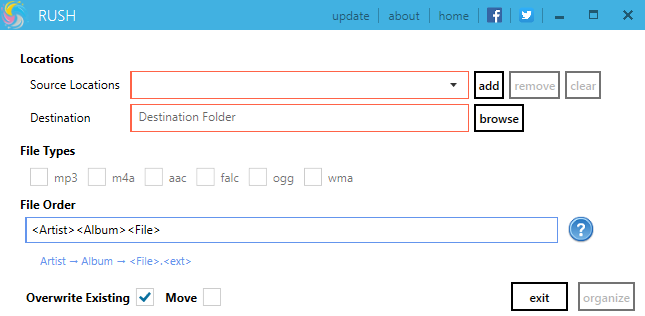
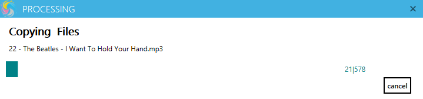

Rush
Rush is a powerful media file oraganizer
latest version : 1.0
Screen shots
 Overview
Rush is an simple tool that will allow you to organize your music files by moving, renaming, and placing them into the directory . rush can copy files from different locations and place them in a 1 destination folder and organize in a folder structure. you can specify the folder structure and naming rules of files. Rush will copy files and rename files as you want. no files will harmed . during the operation. rush supports most popular file types .
Features
- simple and easy to use
- completely free
- simple interface
- no harm to any file
- more options to rename files
- detailed log and reports
- minimum memory usage
- high speed processing
How Many People Visit